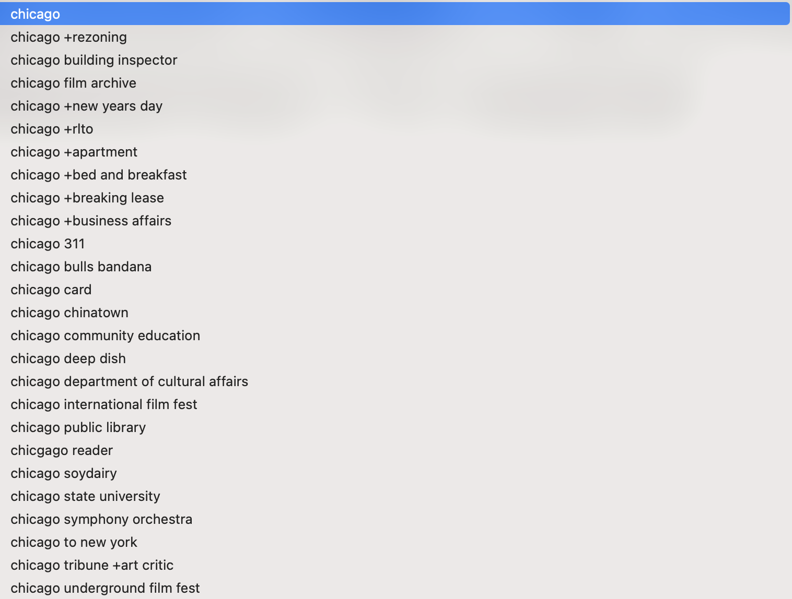
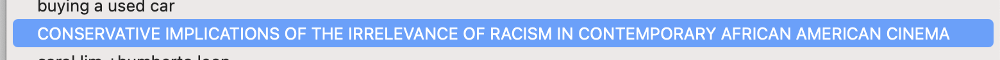
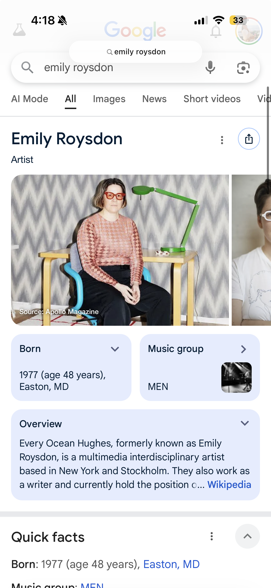
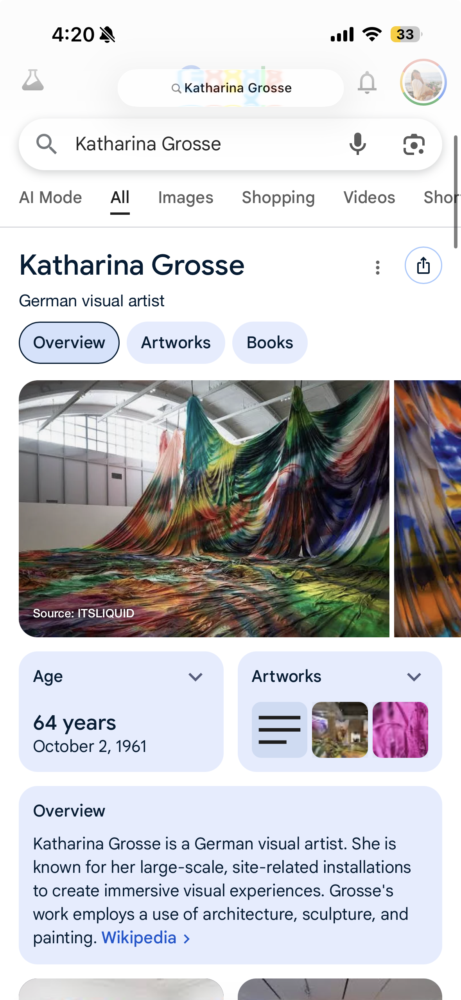
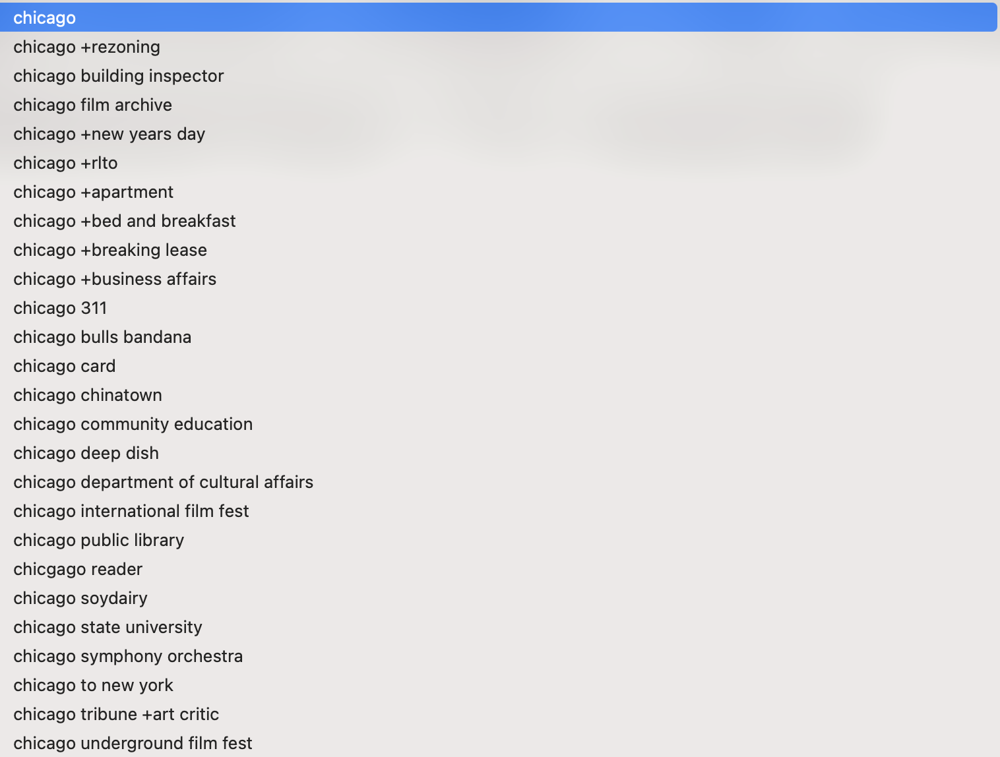
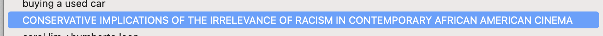
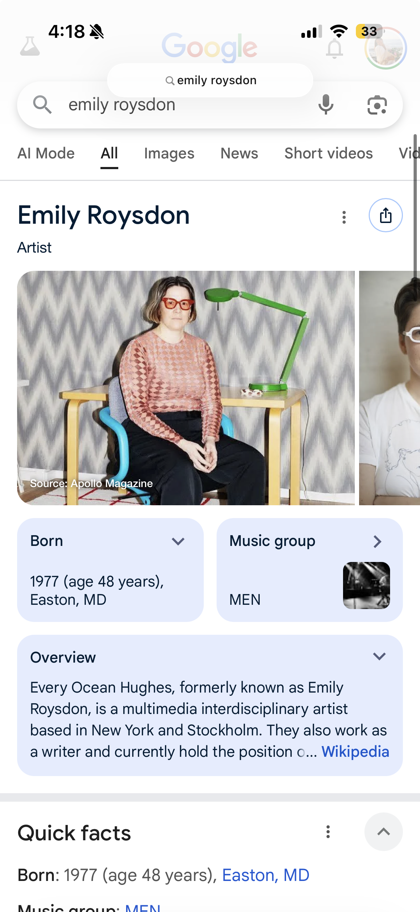
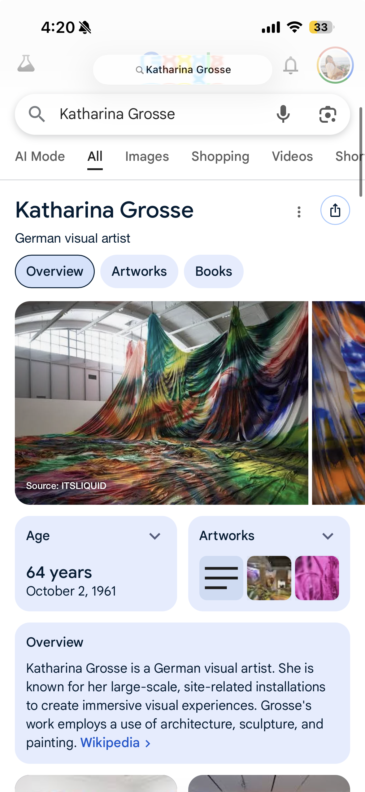
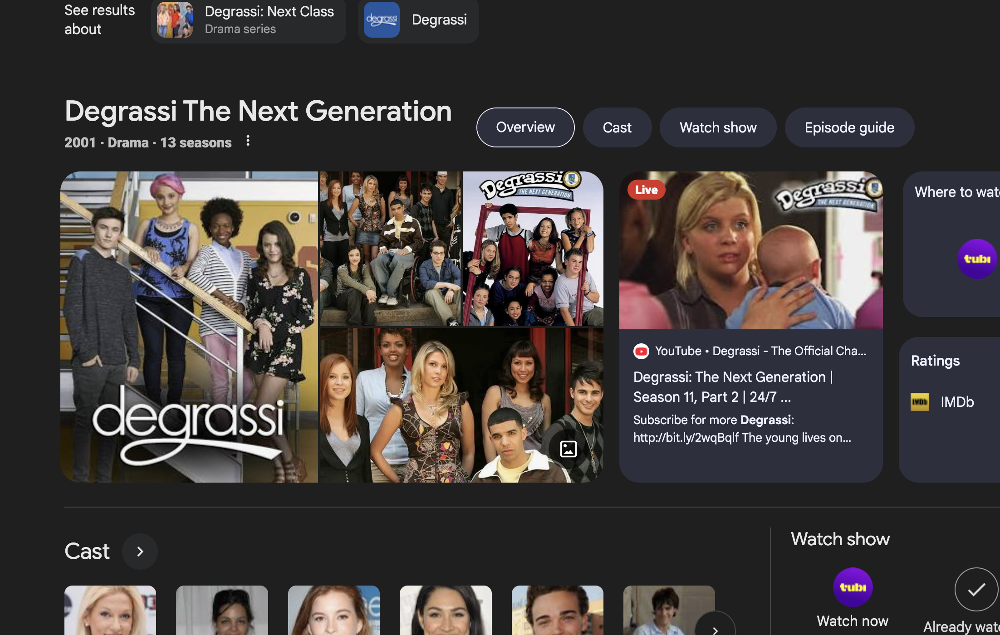
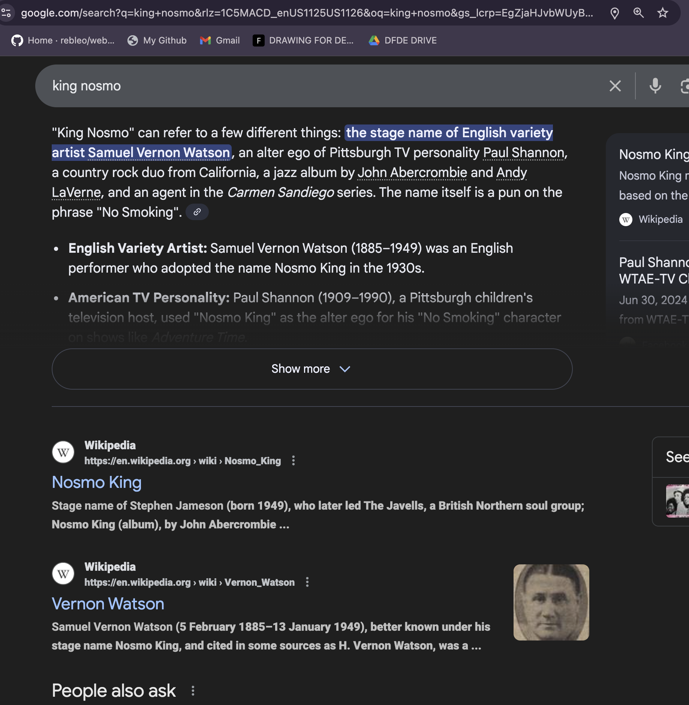

Isabel
First Impressions:
The site feels minimalistic, yet it carries immense depth. It reflects both the context of the early internet and Syms’ individuality at the time. The simplicity of language captures how words, searches, and language shape identity in the digital age.
Reflections:
The piece challenges the idea that the internet is a detached, artificial space. Instead, Syms uses it to reclaim visibility and explore identity within a social and cultural framework. Each search term feels intimate—it reveals curiosity, emotion, and thought processes. For example, small typos or corrections (“Let me fix that spelling”) make the experience personal and human. Her searches show a multifaceted person: Curious, creative, bilingual (learning Spanish), Interested in arts, film, music, affordability (“cheap,” “free”), and people.
What it made me think about:
How our search histories reveal who we are—our desires, insecurities, habits, and questions. The connection between the digital self and real-world identity. I felt oddly connected to her—as if discovering fragments of a stranger that mirror parts of myself. Made assumptions on person based on Made me think about stereotypes, assumptions, words, etc So interesting how even with these 2 words I sort of can know her thought process was Let me fix that spelling” it sort of connects us in a way / transports me to what she was thinking in this moment.
What your searches are reveal not only what you're curious about but your interests, desires, routine, locations, so much !! I love this concept and thinks its eye opening to conversations about connection. I wanted to know more about this artist because I felt this odd connection and like I had pieces to a missing puzzle.
Observations:
Lived in LA and Chicago. Artistic and curious person. Spent some time learning Spanish. Into arts particularly film and music. Looking for affordable and cheap solutions “cheap, free”. Spent time looking into the PEOPLE she searched for which is fascinating ! It made me think about what *I* search for.
. 








Kyona
My first impression was filled with curiosity about her artwork. Especially because it must take a lot of dedication to be able to manually log search results for 3 years. I wonder if she forgot to log some things or omitted some searches.
I was initially confused about her profession because it was incredibly diverse. I was not sure where she specialized.
Reflections:
Later I saw she is truly a jack of all trades; she specializes in so much such as film, photography, exhibitions, etc, that it's truly admirable she did not confine herself to one path.
A point that made me very intrigued was when she was questioned in a New York Times article, “I asked Syms why, given her dynamic range, she still works as a gallery artist. To which she then responded, “I feel a great deal of freedom, you know?” Only in the art world, she said, are your most unqualified hunches met with such serious”
This is so fascinating to me because what people truly desire is the freedom to explore and express themselves. Art is the perfect medium for that, and she found the perfect environment for that.
What it made me think about:
I enjoyed seeing her activism, especially as a black woman myself. Seeing her fully express her creativity and put it into action is inspiring.
 